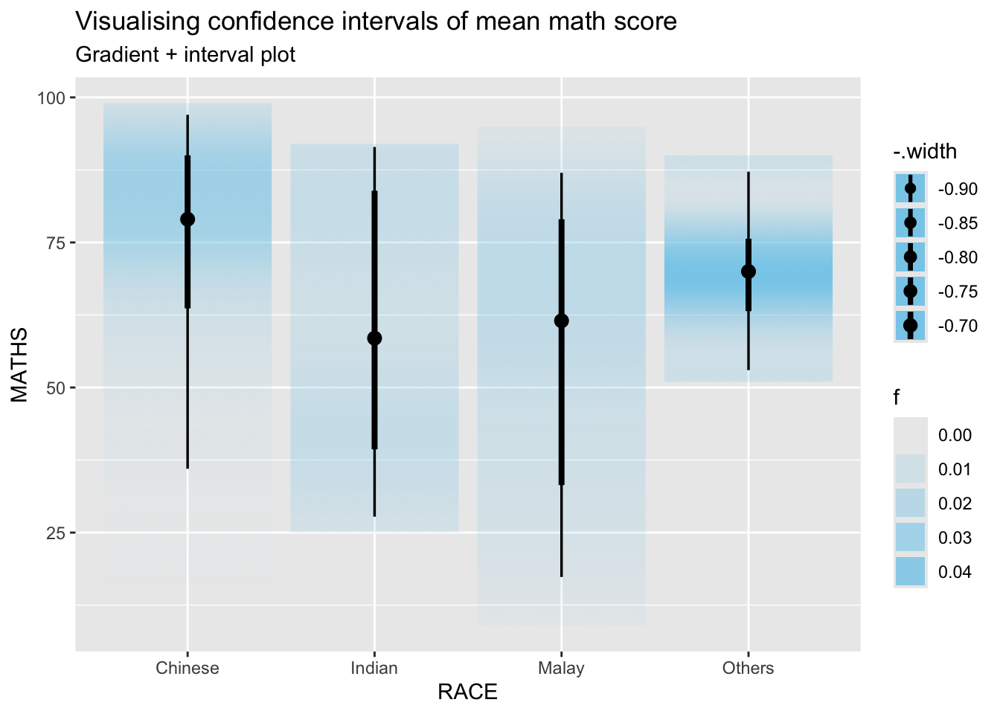
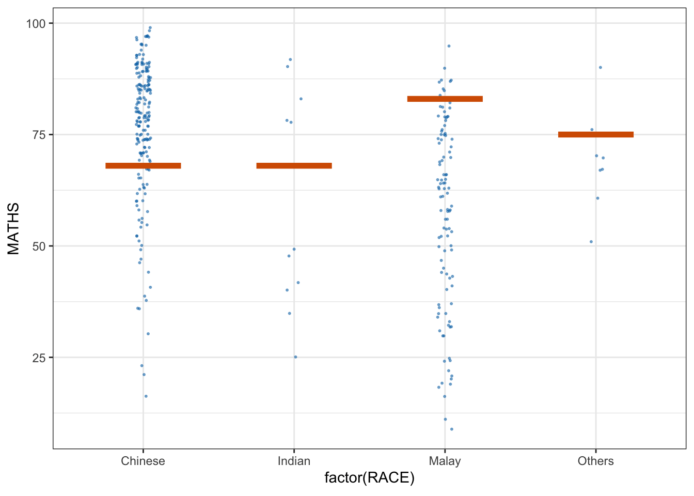

pacman::p_load(plotly, crosstalk, DT,
ggdist, ggridges, colorspace,
gganimate, tidyverse)Hands-on_Ex4.3
Learning Outcome
Visualising uncertainty is relatively new in statistical graphics. This chapter covers creating statistical graphics for visualising uncertainty. Topics include:
- to plot statistics error bars by using ggplot2,
- to plot interactive error bars by combining ggplot2, plotly and DT,
- to create advanced by using ggdist, and
- to create hypothetical outcome plots (HOPs) by using ungeviz package.
Getting Started
Installing and loading the packages
For the purpose of this exercise, the following R packages will be used, they are:
- tidyverse, a family of R packages for data science process,
- plotly for creating interactive plot,
- gganimate for creating animation plot,
- DT for displaying interactive html table,
- crosstalk for for implementing cross-widget interactions (currently, linked brushing and filtering), and
- ggdist for visualising distribution and uncertainty.
Data import
For the purpose of this exercise, Exam_data.csv will be used.
exam <- read_csv("Data/Exam_data.csv")Rows: 322 Columns: 7
── Column specification ────────────────────────────────────────────────────────
Delimiter: ","
chr (4): ID, CLASS, GENDER, RACE
dbl (3): ENGLISH, MATHS, SCIENCE
ℹ Use `spec()` to retrieve the full column specification for this data.
ℹ Specify the column types or set `show_col_types = FALSE` to quiet this message.Visualizing the uncertainty of point estimates: ggplot2 methods
A point estimate is a single number, such as a mean. Uncertainty, on the other hand, is expressed as standard error, confidence interval, or credible interval.
Important
- Don’t confuse the uncertainty of a point estimate with the variation in the sample
This section plots error bars of maths scores by race using the exam tibble. First, the necessary summary statistics are derived.
my_sum <- exam %>%
group_by(RACE) %>%
summarise(
n=n(),
mean=mean(MATHS),
sd=sd(MATHS)
) %>%
mutate(se=sd/sqrt(n-1))The code uses group_by() to group by RACE, summarise() to compute count, mean and standard deviation, and mutate() to derive standard error; the result is saved as my_sum.
Next, my_sum is displayed in an html table.
knitr::kable(head(my_sum), format = 'html')| RACE | n | mean | sd | se |
|---|---|---|---|---|
| Chinese | 193 | 76.50777 | 15.69040 | 1.132357 |
| Indian | 12 | 60.66667 | 23.35237 | 7.041005 |
| Malay | 108 | 57.44444 | 21.13478 | 2.043177 |
| Others | 9 | 69.66667 | 10.72381 | 3.791438 |
Plotting standard error bars of point estimates
Standard error bars of mean maths score by race are plotted as follows.

ggplot(my_sum) +
geom_errorbar(
aes(x=RACE,
ymin=mean-se,
ymax=mean+se),
width=0.2,
colour="black",
alpha=0.9,
linewidth=0.5) +
geom_point(aes
(x=RACE,
y=mean),
stat="identity",
color="red",
size = 1.5,
alpha=1) +
ggtitle("Standard error of mean maths score by rac")The error bars use the formula mean ± se; geom_point() uses stat=“identity”.
Plotting confidence interval of point estimates
Instead of plotting the standard error bar of point estimates, we can also plot the confidence intervals of mean maths score by race.

ggplot(my_sum) +
geom_errorbar(
aes(x=reorder(RACE, -mean),
ymin=mean-1.96*se,
ymax=mean+1.96*se),
width=0.2,
colour="black",
alpha=0.9,
linewidth=0.5) +
geom_point(aes
(x=RACE,
y=mean),
stat="identity",
color="red",
size = 1.5,
alpha=1) +
labs(x = "Maths score",
title = "95% confidence interval of mean maths score by race")The confidence intervals use mean ± 1.96×se; the error bars are sorted by mean maths score; labs() sets the x-axis label.
Visualizing the uncertainty of point estimates with interactive error bars
This section plots interactive error bars for the 99% confidence interval of mean maths score by race.
Warning: Using `size` aesthetic for lines was deprecated in ggplot2 3.4.0.
ℹ Please use `linewidth` instead.Warning in geom_point(aes(x = RACE, y = mean, text = paste("Race:", RACE, :
Ignoring unknown aesthetics: textshared_df = SharedData$new(my_sum)
bscols(widths = c(4,8),
ggplotly((ggplot(shared_df) +
geom_errorbar(aes(
x=reorder(RACE, -mean),
ymin=mean-2.58*se,
ymax=mean+2.58*se),
width=0.2,
colour="black",
alpha=0.9,
size=0.5) +
geom_point(aes(
x=RACE,
y=mean,
text = paste("Race:", `RACE`,
"<br>N:", `n`,
"<br>Avg. Scores:", round(mean, digits = 2),
"<br>95% CI:[",
round((mean-2.58*se), digits = 2), ",",
round((mean+2.58*se), digits = 2),"]")),
stat="identity",
color="red",
size = 1.5,
alpha=1) +
xlab("Race") +
ylab("Average Scores") +
theme_minimal() +
theme(axis.text.x = element_text(
angle = 45, vjust = 0.5, hjust=1)) +
ggtitle("99% Confidence interval of average /<br>maths scores by race")),
tooltip = "text"),
DT::datatable(shared_df,
rownames = FALSE,
class="compact",
width="100%",
options = list(pageLength = 10,
scrollX=T),
colnames = c("No. of pupils",
"Avg Scores",
"Std Dev",
"Std Error")) %>%
formatRound(columns=c('mean', 'sd', 'se'),
digits=2))Visualising Uncertainty: ggdist package
- ggdist is an R package that provides a flexible set of ggplot2 geoms and stats designed especially for visualising distributions and uncertainty.
- It is designed for both frequentist and Bayesian uncertainty visualization, taking the view that uncertainty visualization can be unified through the perspective of distribution visualization:
- for frequentist models, one visualises confidence distributions or bootstrap distributions (see vignette(“freq-uncertainty-vis”));
- for Bayesian models, one visualises probability distributions (see the tidybayes package, which builds on top of ggdist).

Visualizing the uncertainty of point estimates: ggdist methods
In the code chunk below, stat_pointinterval() of ggdist is used to build a visual for displaying distribution of maths scores by race.
exam %>%
ggplot(aes(x = RACE,
y = MATHS)) +
stat_pointinterval() +
labs(
title = "Visualising confidence intervals of mean math score",
subtitle = "Mean Point + Multiple-interval plot")
For example, the following arguments are used:
- .width = 0.95
- .point = median
- .interval = qi
exam %>%
ggplot(aes(x = RACE, y = MATHS)) +
stat_pointinterval(.width = 0.95,
.point = median,
.interval = qi) +
labs(
title = "Visualising confidence intervals of median math score",
subtitle = "Median Point + Multiple-interval plot")Warning in layer_slabinterval(data = data, mapping = mapping, stat =
StatPointinterval, : Ignoring unknown parameters: `.point` and `.interval`
Visualizing the uncertainty of point estimates: ggdist methods (95% and 99% confidence intervals)
exam %>%
ggplot(aes(x = RACE,
y = MATHS)) +
stat_pointinterval(
show.legend = FALSE) +
labs(
title = "Visualising confidence intervals of mean math score",
subtitle = "Mean Point + Multiple-interval plot")
Visualizing the uncertainty of point estimates: ggdist methods
stat_gradientinterval() of ggdist is used to display distribution of maths scores by race.
exam %>%
ggplot(aes(x = RACE,
y = MATHS)) +
stat_gradientinterval(
fill = "skyblue",
show.legend = TRUE
) +
labs(
title = "Visualising confidence intervals of mean math score",
subtitle = "Gradient + interval plot")
Visualising Uncertainty with Hypothetical Outcome Plots (HOPs)
Installing ungeviz package
devtools::install_github("wilkelab/ungeviz")Launch the application in R
library(ungeviz)Visualising Uncertainty with Hypothetical Outcome Plots (HOPs)
Next, the code chunk below will be used to build the HOPs.
ggplot(data = exam,
(aes(x = factor(RACE),
y = MATHS))) +
geom_point(position = position_jitter(
height = 0.3,
width = 0.05),
size = 0.4,
color = "#0072B2",
alpha = 1/2) +
geom_hpline(data = sampler(25,
group = RACE),
height = 0.6,
color = "#D55E00") +
theme_bw() +
transition_states(.draw, 1, 3)Warning in geom_hpline(data = sampler(25, group = RACE), height = 0.6, color =
"#D55E00"): Ignoring unknown parameters: `height`